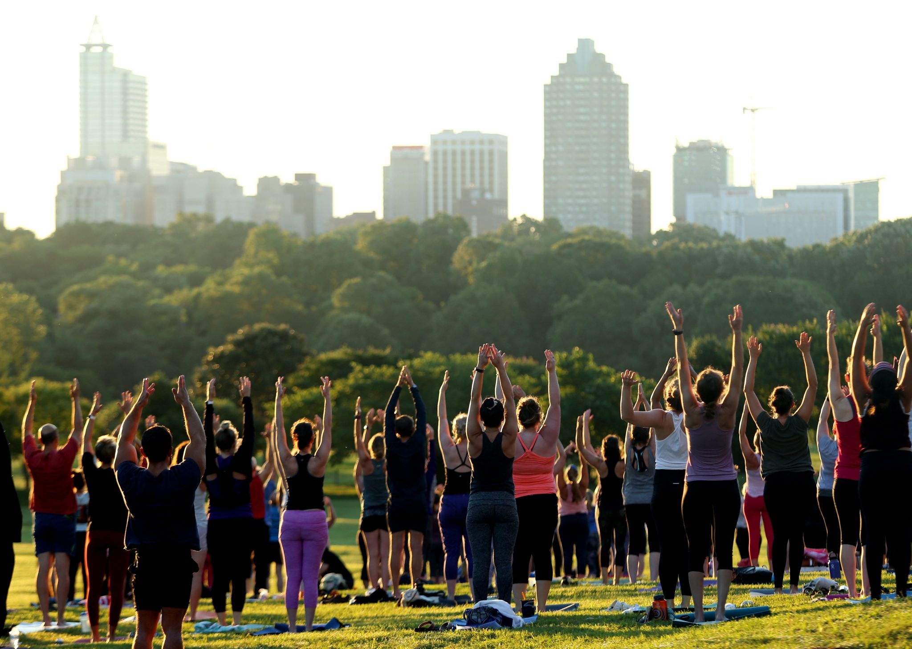

Credits & Acknowledgments
Just Start Yoga was inspired by a passion for making yoga accessible to all. We’d like to acknowledge the teachers, writers, and communities who have contributed to this mission. Special thanks to The Yoga Hub (theyogahub.ie) for serving as a reference in shaping our project concept. Images used in this website are royalty-free and sourced from platforms like Unsplash and Pexels, ensuring safe and legal usage. Any instructional content is based on widely available beginner yoga knowledge, taught in countless studios worldwide. We also appreciate the open-source developers who make web projects like this possible, from HTML and CSS standards to GitHub Pages hosting. Above all, we thank the global yoga community for fostering a spirit of inclusivity, kindness, and learning. This project is dedicated to every beginner taking their first step on the mat—you are the heart of yoga.
